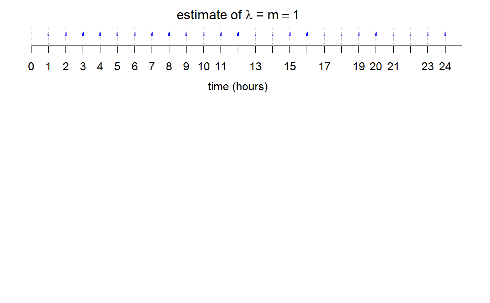

R/poisson_process_check_movie.R
poisson_process_check.RdA movie to perform informal graphical checks of whether event arrival times are consistent with arising from a (one-dimensional, homogeneous) Poisson process.
poisson_process_check(
user_data = NULL,
total_time = NULL,
intervals = 1,
unif_bins = NULL,
exp_bins = NULL
)A numeric vector of arrival times of events.
A positive numeric scalar. The number of time units
(for example hours) over which the events in user_data
were recorded. Must be no smaller than the largest value in
user_data.
An integer scalar. Must not be smaller than 1.
The number of intervals into which to split the time interval
(0, total_time) for the purposes of checking the property
that the number of events that occur in an interval of fixed width
has a Poisson distribution. If intervals is not an integer
then it will be rounded to the nearest integer.
A positive integer scalar. The number of bins to use in
the histogram in the "times at which events occur" described in
Details. If this is not supplied then the default
number of bins used in hist is used.
A positive integer scalar. The number of bins to use in
the histogram in the "times between events" described in
Details. If this is not supplied then the default
number of bins used in hist is used.
Nothing is returned, only the animation is produced.
This movie contains two displays of plots: one plot on the top and
one of three other plots on the bottom. The rate, \(\lambda\) say, of
the supposed Poisson process is estimated by the sample mean number of
events over the n_intervals, that is,
length(user_data) / intervals. Let's call this estimate
\(m\).
The type of plot that appears in the bottom of the display depends on the radio click by the user. The choices are
"none" Nothing is plotted
"numbers of events in each hour" A barplot (the red bars) giving the proportions of the hours for which there are 0, 1 , 2, ... events. Also included are black bars showing the p.m.f. of a Poisson(\(m\)) random variable.
"times between events" A histogram (with red rectangles) of the sample times between events, with the p.d.f. of an exponential(\(m\)) random variable superimposed.
"times at which events occur" A histogram (with red rectangles)
of the simulated event times, with the p.d.f. of a
uniform(0, hours) random variable superimposed.
The type of plot can be changed by clicking on the appropriate radio button.
stat0002movies: general information about the movies.
poisson_process_movie: for similar plots based on
data simulated from a Poisson process.
# Data in which an event occurs exactly on the hour
poisson_process_check(user_data = (1:24), 24, 24)
poisson_process_check(user_data = (1:24), 24, 24, exp_bins = 100)
